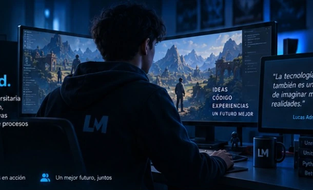
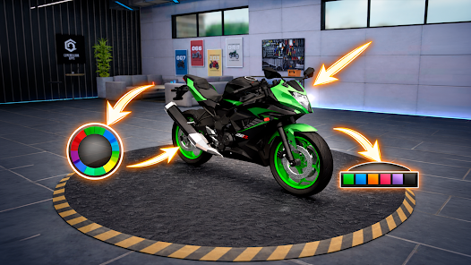
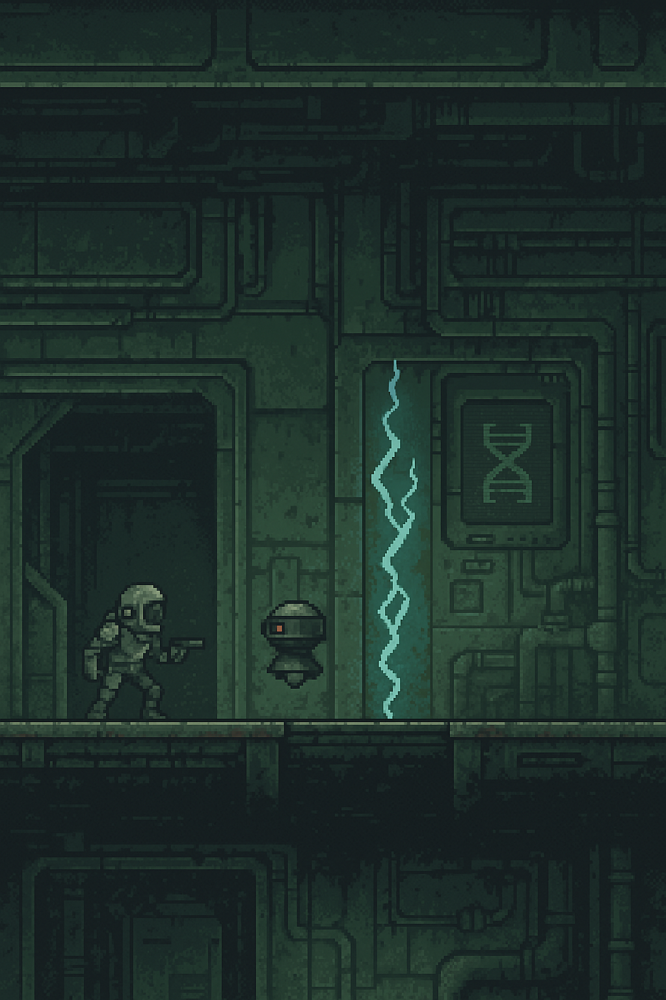

Resolver problemas
Analizo, entiendo y busco soluciones prácticas a desafíos reales, aplicando lógica y creatividad.
01 / ENFOQUESoy Lucas Adrián Medina, estudiante de Diseño y Desarrollo de Videojuegos en la Universidad Siglo 21. Me interesa la programación, el desarrollo de experiencias interactivas y la automatización de procesos para resolver problemas reales.

Creo en el aprendizaje constante y en la tecnología como herramienta para generar un impacto positivo. Mi objetivo es transformar ideas y problemas en soluciones simples, útiles y efectivas.
Analizo, entiendo y busco soluciones prácticas a desafíos reales, aplicando lógica y creatividad.
01 / ENFOQUEMe mantengo en formación, explorando nuevas tecnologías y mejorando mis habilidades cada día.
02 / CRECIMIENTOQuiero desarrollar proyectos que informen, entretengan y generen un impacto positivo en las personas.
03 / CREATIVIDADUn proyecto aplicado en una empresa y las áreas técnicas en las que continúo formándome. Cada proyecto se presenta con contexto, proceso y resultados verificables.
Herramienta desarrollada para Acoplados Belén S.A. que organiza información de las jornadas laborales y automatiza cálculos utilizados en la gestión administrativa.
ProblemaLa necesidad de organizar y calcular horas trabajadas, extras y no trabajadas.
SoluciónUna herramienta interna que centraliza la información y facilita el procesamiento de los datos.
ResultadoUso cotidiano dentro de la empresa y mejor disponibilidad de información para controles estadísticos.
Espacios en los que sigo desarrollando conocimientos y proyectos académicos.

COIL 2025 · UNREAL ENGINEProyecto del programa COIL in Entrepreneurship & Innovation Applied to Game Design, realizado con estudiantes de una universidad de Canadá. Preparé una presentación para potenciales inversores y analicé sus fortalezas y debilidades.

GAME JAM 2025 · UNITYPlataformero protagonizado por un robot que debía encontrar la salida de un laboratorio. Participé en las decisiones y acompañé al equipo durante las distintas fases del proyecto.
Fundamentos, orientación a objetos, lógica y resolución algorítmica de problemas.
Ver conocimientosCombino más de 10 años de experiencia administrativa con mi formación tecnológica. Cada etapa aporta una mirada práctica, responsabilidad y capacidad para resolver problemas.
Intercambio académico con estudiantes de una universidad de Canadá. Mi participación se centró en preparar una presentación orientada a potenciales inversores y analizar las fortalezas y debilidades del juego de carreras de motos.
Conocer el proyectoParticipación en un juego de plataformas sobre la huida de un robot de un laboratorio. Colaboré en la toma de decisiones y acompañé el proyecto a lo largo de sus distintas fases, trabajando junto al equipo durante la experiencia de la game jam.
Conocer el proyectoGestión de sistemas contables, compras de materias primas, proveedores, pagos, control del personal y liquidación de sueldos. Participación en Recursos Humanos, mediación y mejora de procesos administrativos y operativos.
Formación en programación, diseño de videojuegos, motores de desarrollo y experiencias interactivas.
Conocimientos técnicos en desarrollo y herramientas que complemento con aprendizaje continuo.
¿Tenés una idea, un proyecto o te gustaría trabajar juntos? Me encantaría conocer tu propuesta y conversar sobre cómo podemos crear algo útil.